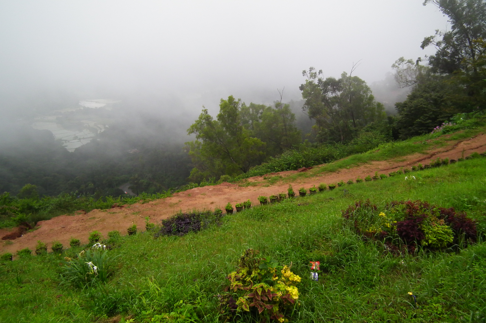

1 / 3

Caption Text
1 / 3

Caption Text
1 / 3

Caption Text
2 / 3

Caption Two
Change image every 4 seconds:
Thiruvananthapuram, known as Trivandrum, is the capital city and the largest city of the Indian state of Kerala.The city has a population of 957,730 inhabitants and a metropolitan population of 1.68 million making it the most populous city in Kerala. Thiruvananthapuram is a major IT hub in India and contributes 80% of Kerala's software exports. The Technopark, Trivandrum is the largest Information Technology park in Asia in terms of area. Trivandrum is located on the west coast of India near the extreme south of the mainland. Referred to by Mahatma Gandhi as the Evergreen city of India. the city is characterised by its undulating terrain of low coastal hills.. It is classified as a tier-2 city by the government of India. The world's richest temple


It is one of the oldest Dam in kerala. its very far from trivandrum railway station . Good water resource for Trivandrum corperation.
The Napier Museum is an art and natural history museum situated in Thiruvananthapuram, the capital city of Kerala, India. The museum is about 6 km from the city. Visiting Hours: Open 10.00 - 16.45 hrs. Closed on Mondays, Wednesday forenoons, January 26, August 15, Thiruvonam and Mahanavami.
Padmanabhaswamy Temple is located in Thiruvananthapuram, Kerala, India. The temple is built in an intricate fusion of the indigenous Kerala style and the Dravidian style of architecture associated with the temples located in the neighbouring state of Tamil Nadu, featuring high walls, and a 16th-century Gopuram. While the Moolasthanam of the temple is the Ananthapuram Temple in Kasargod, architecturally to some extent, the temple is a replica of the Adikesava Perumal temple located in Kanyakumari District. It is the richest Hindu temple in the world. In terms of gold assets and precious stones, it is by far the wealthiest institution and place of worship of any kind in the recorded history of the world, with an estimated $22 billion worth of gold and jewels stored in underground vaults. At the time of writing, only 5 of the 6 underground vaults had been opened and explored.